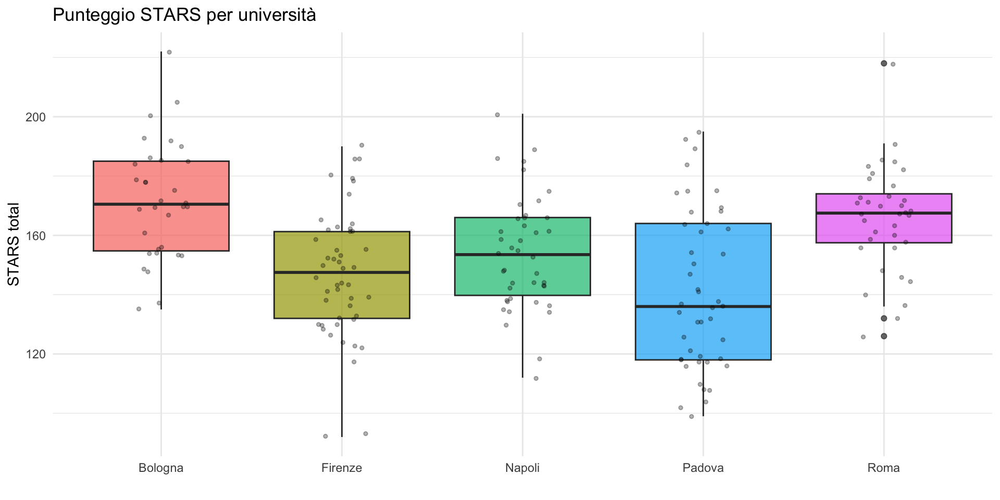
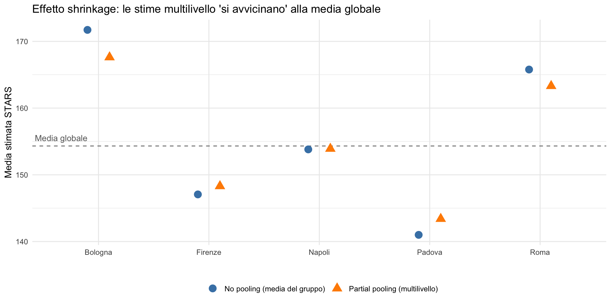
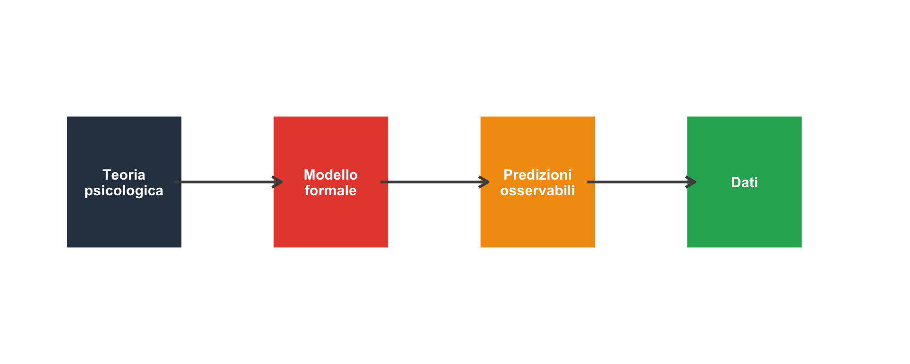

![]()
# A tibble: 8 × 2
universita STARS_total
<chr> <dbl>
1 Firenze 186
2 Padova 137
3 Roma 167
4 Firenze 136
5 Bologna 155
6 Bologna 154
7 Roma 168
8 Firenze 165Modelli multilivello e modellazione formale
Quando un modello unico non basta
29 ottobre 2026
Dal singolo gruppo ai dati raggruppati
Nella Lezione 28 abbiamo visto come analizzare un dataset con entrambi gli approcci inferenziali: frequentista e bayesiano. Ma lo studio di Mehr et al. era relativamente semplice: un unico campione, una sola variabile.
Nella pratica psicologica, però, i dati hanno quasi sempre una struttura più complessa: pazienti raggruppati per terapeuta, studenti raggruppati per classe, misure ripetute sullo stesso individuo. Oggi vediamo come gestire questa complessità.
Dove siamo
In questo corso abbiamo imparato a:
- descrivere i dati (EDA),
- ragionare con la probabilità,
- aggiornare le credenze con il teorema di Bayes (Lezione 17),
- stimare un parametro: media (Lezione 25), differenza tra gruppi (Lezione 26), regressione (Lezione 24).
Oggi facciamo un passo in più: cosa succede quando i dati hanno una struttura gerarchica — cioè quando le osservazioni sono raggruppate?
Perché vi riguarda come futuri psicologi
Pensate a queste situazioni professionali concrete:
- Uno psicologo scolastico valuta un intervento anti-bullismo in 12 classi di 4 scuole diverse. I risultati dipendono dalla classe? Dalla scuola?
- Uno psicoterapeuta in un servizio clinico vuole sapere se la CBT funziona. Ma i pazienti sono seguiti da 8 terapeuti diversi — e alcuni terapeuti ottengono risultati sistematicamente migliori.
- Un ricercatore somministra un questionario a 200 studenti di 5 università. Le risposte di studenti della stessa università sono più simili tra loro.
In tutti questi casi, ignorare la struttura dei gruppi porta a conclusioni sbagliate.
Cosa sono i dati gerarchici?
In psicologia, i dati sono sempre organizzati a più livelli:
- studenti → classi → scuole;
- misure ripetute → partecipanti;
- item → sottoscale → partecipanti.
Questa struttura crea dipendenza statistica: osservazioni dello stesso gruppo (es. stessa classe) tendono a essere più simili tra loro.
Trascurarla porta a risultati distorti e conclusioni non valide.
Il problema
Un esempio concreto
Immaginiamo uno studio sull’ansia statistica in 5 università italiane. In ciascuna si somministra la STARS a un campione di studenti.
Un primo sguardo ai dati

Le distribuzioni si sovrappongono molto, ma le medie non sono identiche. Come modelliamo questa situazione?
Strategia 1: ignorare i gruppi (“complete pooling”)
Facciamo finta che tutti gli studenti vengano dalla stessa popolazione e stimiamo un’unica media.
Problema:
ignoriamo completamente le differenze tra università. Se un’università ha un corso di metodologia particolarmente ansiogeno, il suo effetto viene “diluito” nella media globale.
Strategia 2: analizzare ogni gruppo da solo (“no pooling”)
Stimiamo una media separata per ciascuna università, senza condividere informazioni tra gruppi.
# A tibble: 5 × 4
universita media sd n
<chr> <dbl> <dbl> <int>
1 Bologna 172. 19.8 32
2 Firenze 147. 21.7 48
3 Napoli 154. 19.2 42
4 Padova 141 26.6 45
5 Roma 166. 17.9 36Problema:
se un’università ha pochi studenti, la stima è molto incerta. E non sfruttiamo il fatto che tutte le università italiane hanno qualcosa in comune.
Strategia 3: il compromesso multilivello (“partial pooling”)
L’idea chiave dei modelli multilivello:
Le medie dei gruppi non sono né identiche né completamente indipendenti. Vengono da una distribuzione comune le cui caratteristiche vengono stimate dai dati stessi.
Questo produce un effetto chiamato shrinkage (restringimento): le stime dei gruppi vengono “attirate” verso la media globale, ma non completamente — di più per i gruppi piccoli, di meno per quelli grandi.
Shrinkage: un’intuizione visiva

Perché lo shrinkage ha senso
Lo shrinkage non è un trucco matematico: è una conseguenza logica del ragionamento bayesiano che abbiamo studiato dalla Lezione 17 in poi.
Se sappiamo che le università italiane condividono un contesto simile (bacino di reclutamento, programmi formativi affini e stessi metodi didattici), è ragionevole che un’università con una media anomala basata su pochi dati venga “corretta” verso la media comune.
Con più dati, la correzione è minore: i dati parlano da soli.
Con pochi dati, la correzione è maggiore: ci affidiamo di più alle informazioni degli altri gruppi.
- Questo è esattamente il bilanciamento prior–verosimiglianza che abbiamo studiato, applicato a livello di gruppo.
La struttura del modello
Due livelli di analisi
Un modello multilivello (o gerarchico) serve quando i dati hanno una struttura a gruppi. Nel nostro esempio:
- gli studenti sono raggruppati dentro le università;
- quindi le osservazioni non sono tutte indipendenti tra loro.
Per questo il modello lavora su almeno due livelli.
Livello 1 — variazione dentro i gruppi (within)
Domanda:
In che modo gli studenti differiscono tra loro all’interno della stessa università?
La formula è:
\[ y_{ij} = \mu_j + \varepsilon_{ij}. \]
Vediamo i termini uno per uno:
\(\boldsymbol{y_{ij}}\) è il punteggio osservato dello studente \(i\) nella università \(j\) (ad esempio: un punteggio di ansia, memoria, benessere psicologico, ecc.).
\(\boldsymbol{\mu_j}\) è la media della università (j) → rappresenta il livello “tipico” degli studenti di quella università.
\(\boldsymbol{\varepsilon_{ij}}\) è lo scarto individuale dello studente \(i\) rispetto alla media della sua università → cattura le differenze individuali dentro lo stesso gruppo.
Assumiamo che questi scarti seguano una distribuzione normale:
\[ \varepsilon_{ij} \sim \text{Normale}(0, \sigma_w) \] con
- media = 0: in media gli studenti non sono né sopra né sotto la media del gruppo;
- \(\sigma_w\) (within-group variability): indica quanto gli studenti differiscono tra loro dentro la stessa università.
In parole semplici: \(\boldsymbol{\sigma_w}\) misura la variabilità individuale all’interno dei gruppi. Come nella Lezione 25, è la variabilità che incontriamo quando passiamo dalla media \(\mu\) all’individuo \(X\).
Livello 2 — variazione tra i gruppi (between)
Domanda:
In che modo le università differiscono tra loro?
Qui non guardiamo più i singoli studenti, ma le medie delle università:
\[ \mu_j \sim \text{Normale}(\mu_0, \sigma_b). \]
Anche qui, termine per termine:
\(\boldsymbol{\mu_j}\) è la media della università \(j\) (già vista nel Livello 1).
\(\boldsymbol{\mu_0}\) è la media generale, cioè la media di tutte le università messe insieme.
\(\boldsymbol{\sigma_b}\) (between-group variability): indica quanto le università differiscono tra loro.
In parole semplici: \(\boldsymbol{\sigma_b}\) misura l’eterogeneità tra i gruppi.
Riassunto intuitivo delle due variabilità
- \(\boldsymbol{\sigma_w}\) → quanto sono diversi gli studenti dentro la stessa università.
- \(\boldsymbol{\sigma_b}\) → quanto sono diverse le università tra loro.
Entrambe sono fondamentali per capire la struttura dei dati.
Il ruolo di \(\sigma_b\): perché è così importante
Il parametro \(\sigma_b\) controlla quanta informazione viene condivisa tra i gruppi.
Caso 1 — \(\sigma_b \approx 0\)
- Le università sono quasi identiche.
- Le loro medie sono tutte molto simili.
- Il modello si comporta come se ci fosse un solo grande gruppo → complete pooling.
Caso 2 — \(\sigma_b\) molto grande (rispetto a \(\sigma_w\))
- Le università sono molto diverse tra loro.
- Ogni università è trattata quasi come un caso a sé → no pooling.
Caso 3 — valori intermedi di \(\sigma_b\)
- Le università sono diverse, ma non completamente.
- Ogni università mantiene la propria identità, ma beneficia delle informazioni delle altre → partial pooling (la situazione più realistica nella pratica).
Il punto chiave
- Non siamo noi a decidere quanta informazione condividere tra i gruppi.
- È il modello che lo impara dai dati stimando \(\boldsymbol{\sigma_b}\).
Questo è uno dei grandi vantaggi dei modelli multilivello:
- un compromesso automatico e guidato dai dati tra semplicità e flessibilità.
Dove entra la psicologia: esempi dalla pratica
In psicologia, i “gruppi” possono essere:
- partecipanti in uno studio con misure ripetute (ogni partecipante è un “gruppo” di trial);
- classi scolastiche in uno studio su un intervento educativo;
- terapeuti in uno studio sull’efficacia di una psicoterapia.
In ciascun caso, c’è una domanda a cui il modello multilivello aiuta a rispondere:
quanta della variabilità osservata è attribuibile al livello del gruppo?
Per esempio: se un terapeuta ottiene risultati molto migliori degli altri, è merito del terapeuta o del tipo di pazienti assegnati? I modelli multilivello separano queste fonti di variabilità.
La correlazione intra-classe (ICC)
Un modo semplice di riassumere la struttura gerarchica è la correlazione intra-classe (intraclass correlation coefficient, ICC):
\[ \text{ICC} = \frac{\sigma_b^2}{\sigma_b^2 + \sigma_w^2}. \]
L’ICC esprime la proporzione di variabilità totale attribuibile alle differenze tra gruppi.
Interpretazione dell’ICC
- ICC ≈ 0 — le differenze tra i gruppi sono trascurabili: le osservazioni sono molto simili indipendentemente dal gruppo.
- ICC ≈ 0.10 — circa il 10% della variabilità totale è dovuto a differenze tra i gruppi. Questo valore è abbastanza comune in psicologia e indica un effetto di raggruppamento moderato ma non trascurabile.
- ICC ≥ 0.20 — una quota consistente della variabilità è spiegata dall’appartenenza al gruppo. Per esempio, se i gruppi sono gli individui (misure ripetute), un ICC elevato indica grandi differenze individuali stabili nel tempo.
Dalla modellazione statistica a quella formale
Oltre la statistica descrittiva
Finora abbiamo usato i modelli soprattutto come strumenti per riassumere i dati: stimare una media, una differenza tra gruppi o una relazione di regressione.
In psicologia cognitiva e clinica, però, esiste un’altra tradizione di ricerca: la modellazione formale. Qui il modello non si limita a descrivere cosa osserviamo nei dati, ma cerca di spiegare quale processo psicologico li ha generati.
Un esempio: l’apprendimento per rinforzo
Immaginate un esperimento in cui un partecipante deve imparare quale di due pulsanti produce più spesso una ricompensa.
Un modello puramente statistico potrebbe limitarsi a dire: “la probabilità di scegliere il pulsante A è \(p\) = 0.72”.
Questa informazione è utile, ma descrive solo il comportamento osservato, non il meccanismo mentale che lo produce.
Dal comportamento al processo
La domanda diventa:
- Come il partecipante aggiorna le sue aspettative?
- Quanto peso dà agli errori?
- Impara velocemente o lentamente?
Per rispondere serve un modello del meccanismo.
Modello Rescorla-Wagner
Dopo ogni prova, il valore atteso dello stimolo \(s\) viene modificato secondo la regola:
\[ Q_{t+1}(s) \;=\; Q_t(s) \;+\; \alpha \, \delta_t , \] dove
\[ \delta_t \;=\; R_t - Q_t(s) \] è l’errore di previsione (prediction error), cioè la differenza tra la ricompensa ottenuta \(R_t\) e l’aspettativa precedente \(Q_t(s)\).
Il motore dell’apprendimento: la sorpresa
\[ \delta_t = R_t - Q_t(s), \]
- se \(\delta_t > 0\) → ricompensa migliore del previsto → rafforzamento della scelta;
- se \(\delta_t < 0\) → ricompensa peggiore del previsto → indebolimento;
- se \(\delta_t = 0\) → nessuna sorpresa → nessun apprendimento.
L’apprendimento è guidato dalla discrepanza tra aspettativa ed esito: più siamo sorpresi, più correggiamo la nostra previsione.
L’apprendimento è guidato dalla “sorpresa”: la discrepanza tra ciò che ci aspettavamo e ciò che è successo veramente.
Il parametro \(\alpha\): quanto velocemente impariamo?
Il parametro \(\alpha \in [0,1]\) è il tasso di apprendimento.
- \(\alpha\) alto → l’ultimo esito ha molto peso → apprendimento rapido, ma anche instabile (sensibile al rumore);
- \(\alpha\) basso → gli esiti passati contano di più → apprendimento lento e conservativo.
I modelli meccanicistici
Un modello formale (come il modello di Rescorla–Wagner) non è solo una descrizione dei dati ma fornisce una spiegazione del processo:
Il partecipante aggiorna, prova dopo prova, il valore atteso di ciascun pulsante in base alla sorpresa generata dall’esito, usando un tasso di apprendimento \(\alpha\).
\(\alpha\) non è un semplice parametro matematico: è un’ipotesi psicologica su come avviene l’apprendimento (ad esempio, persone ansiose potrebbero avere \(\alpha\) diverso).
Il framework: dalla teoria al modello al dato

Nella modellazione formale, il confronto con i dati è l’ultimo passo.
Prima viene la teoria, poi la sua formalizzazione matematica, poi le previsioni da testare.
Perché ci interessa?
- Rendono le teorie precise e falsificabili
- “Le persone imparano dall’esperienza” → vago.
- “Aggiornano il valore atteso con tasso \(\alpha\)” → verificabile.
- “Le persone imparano dall’esperienza” → vago.
- Permettono di distinguere teorie verbalmente simili
- Due teorie verbali possono sembrare identiche, ma i loro modelli formali producono previsioni diverse.
- Si integrano perfettamente con l’inferenza bayesiana
- I parametri cognitivi (come \(\alpha\)) possono essere stimati con i metodi bayesiani che abbiamo già incontrato (Lezioni 17 in poi).
Il collegamento con i modelli multilivello
Nella pratica, modellazione formale e modelli multilivello si incontrano spesso:
- Se stimiamo un modello di apprendimento per ciascun partecipante, otteniamo un \(\alpha\) per persona. Ma le stime individuali possono essere molto rumorose (pochi trial per partecipante).
La soluzione? Un modello gerarchico: le \(\alpha_j\) dei singoli partecipanti vengono da una distribuzione di gruppo.
\[\alpha_j \sim \text{Distribuzione}(\mu_\alpha, \sigma_\alpha).\]
Lo shrinkage migliora le stime individuali e \(\sigma_\alpha\) ci dice quanta eterogeneità c’è nel tasso di apprendimento della popolazione. È la stessa logica nomotetico/idiografico delle Lezioni 25–26.
Modellazione formale in brms
Per chi vuole approfondire: l’approccio si può implementare in brms per modelli relativamente semplici o in Stan per modelli cognitivi più complessi.
- Il companion (Cap. 39–43) presenta esempi completi, incluso il modello di Rescorla-Wagner implementato in Stan con struttura gerarchica.
In questo corso, l’obiettivo è comprendere la logica fondamentale: i modelli formali traducono in linguaggio matematico le teorie psicologiche; i modelli multilivello gestiscono l’eterogeneità dei dati tra diversi livelli (es. individui, gruppi).
Riepilogo
Le idee da portare a casa
I dati psicologici sono quasi sempre raggruppati. Ignorare la struttura gerarchica porta a conclusioni distorte.
Tre strategie: complete pooling (un’unica media), no pooling (medie separate), partial pooling (modello multilivello). Solo la terza usa tutta l’informazione disponibile.
Lo shrinkage è una conseguenza naturale del ragionamento bayesiano applicato ai gruppi: le stime vengono “bilanciate” tra informazione locale e globale.
La modellazione formale traduce le teorie psicologiche in modelli matematici con parametri interpretabili e si integra naturalmente con l’approccio bayesiano e multilivello.
Per approfondire
Cap. 30 — Modelli multilivello: il modello completo con implementazione in brms
Cap. 39–43 — Modellazione formale: dal concetto di modello statistico al modello di Rescorla-Wagner
Questi capitoli contengono la formalizzazione matematica completa e il codice R riproducibile. Per l’esame è sufficiente quanto visto oggi: la logica del partial pooling, dello shrinkage e del legame tra modellazione formale e approccio bayesiano.